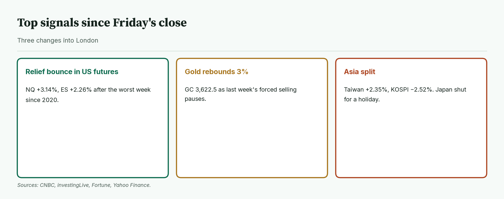
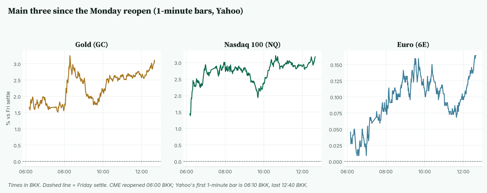
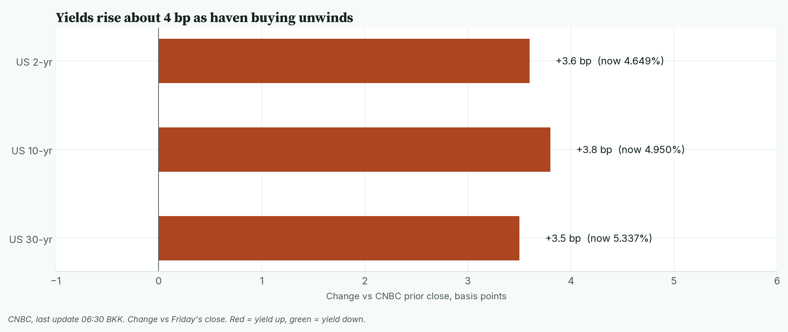
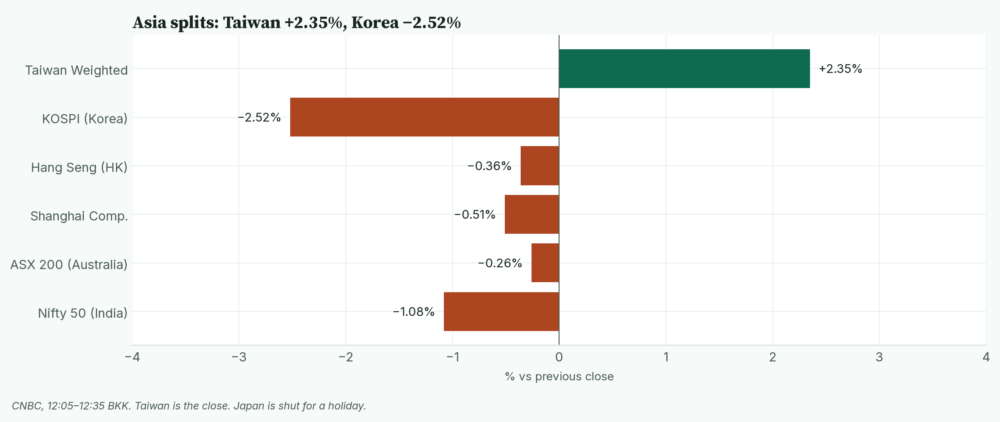
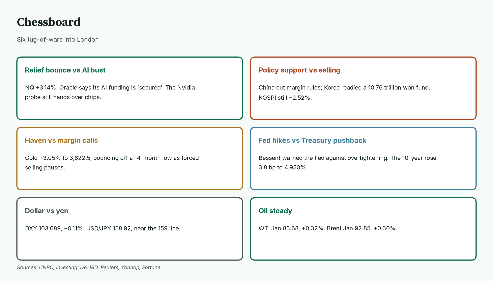
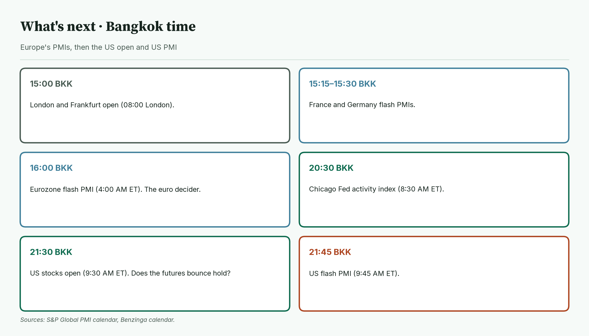
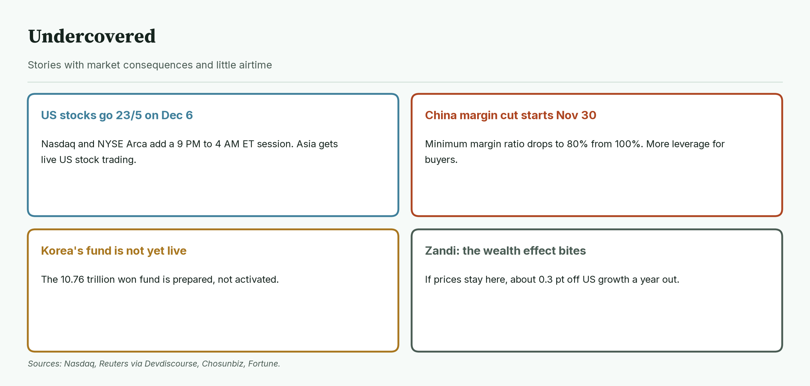
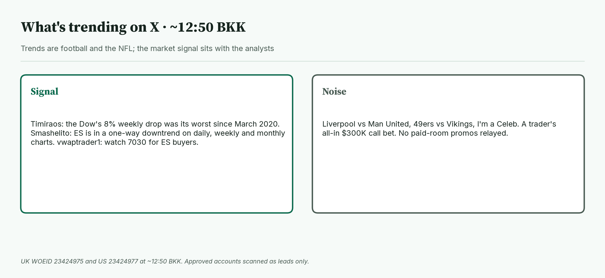

April · Market Intel, pre-London · Mon Nov 23, 2026 · ~13:00 BKK / ~06:00 London
Headline: US futures staged a relief bounce after last week's rout. Nasdaq futures are 25,914.50 (+3.14%) and gold futures rebounded to 3,622.5 (+3.05%). Euro futures are 1.1000 (+0.18%). The Eurozone flash PMI at 16:00 BKK and the US open at 21:30 BKK decide the session.
So what: this is a breather, not a verdict. Weekend policy support paused the forced selling, but nothing has changed the AI valuation fight.
Lean edition: half length this week to save usage. All levels, moves and quote times are checked.
1) Top signals Three changes since Friday's close. US futures bounced, gold rebounded and Asia split. |
 Caption: Futures at 12:39–12:40 BKK versus Friday's settle. Gold and Nasdaq both jump about 3%. The VIX tile is Friday's close.
Caption: Futures at 12:39–12:40 BKK versus Friday's settle. Gold and Nasdaq both jump about 3%. The VIX tile is Friday's close.
 Caption: Three changes since Friday's close. US futures bounced, gold rebounded and Asia split.
Caption: Three changes since Friday's close. US futures bounced, gold rebounded and Asia split.
- Nasdaq futures +3.14%, S&P futures +2.26% after Wall Street's worst week since March 2020 (CNBC, Fortune).
- Gold futures +3.05% to 3,622.5, off a 14-month low (CNBC, Investing.com).
- Taiwan +2.35%, KOSPI −2.52%. Japan is shut for Labour Thanksgiving Day (CNBC, CNBC-TV18).
2) Main instruments The three main contracts since the Monday reopen, as a % move from Friday's settle. All three climbed through the morning. |
 Caption: The three main contracts since the Monday reopen, as a % move from Friday's settle. All three climbed through the morning.
(Quotes are Yahoo Finance futures at 12:39–12:40 BKK (05:40 London), matching CNBC. CME reopened at 06:00 BKK (18:00 New York Sunday). Yahoo's first 1-minute bar is 06:10 BKK, so ranges run since 06:10 BKK.)
Caption: The three main contracts since the Monday reopen, as a % move from Friday's settle. All three climbed through the morning.
(Quotes are Yahoo Finance futures at 12:39–12:40 BKK (05:40 London), matching CNBC. CME reopened at 06:00 BKK (18:00 New York Sunday). Yahoo's first 1-minute bar is 06:10 BKK, so ranges run since 06:10 BKK.)
- Gold futures (GC, Dec): 3,622.5, +3.05%, at 12:40 BKK. Driver: last week's margin-call selling (selling gold to cover losses elsewhere) has paused (investingLive). Friday's settle was 3,515.4. The range since 06:10 BKK is 3,566.3 (06:10 BKK) to 3,629.6 (08:17 BKK); CNBC's session low is 3,552.3. It sits near the high.
- Nasdaq 100 futures (NQ, Dec): 25,914.50, +3.14%, at 12:39 BKK. Driver: short sellers paused after Oracle said its AI funding is "secured" and Asia announced market support (IBD, investingLive). Friday's settle was 25,126.50. The range since 06:10 BKK is 25,462.00 (06:10 BKK) to 25,945.00 (10:37 BKK). It sits near the high.
- Euro futures (6E, Dec): 1.1000, +0.18%, at 12:39 BKK. Driver: a softer dollar as haven demand eased (CNBC). Friday's settle was 1.0980. The range since 06:10 BKK is 1.09805 (06:31 BKK) to 1.0998 (09:30 BKK). It is testing the top.
3) Context: dollar, rates, fear, oil, S&P, Bitcoin Yields rose about 4 bp across the curve. Money is leaving the safety of bonds as stocks bounce. |
 Caption: Yields rose about 4 bp across the curve. Money is leaving the safety of bonds as stocks bounce.
Context. The dollar index (DXY, the dollar against six major currencies) is 103.689, −0.11% (CNBC, 12:50 BKK). The 10-year US yield (what the US government pays to borrow for 10 years) is 4.950%, up 3.8 basis points (CNBC, 06:30 BKK; a basis point is 0.01 percentage point). The VIX (the "fear gauge" built from S&P 500 option prices) closed Friday at 35.89, +26.20% (CNBC). US oil (CL, January) is 83.68, +0.32% (CNBC, 12:39 BKK). S&P 500 futures (ES) are 7,091.50, +2.26% (Yahoo, 12:40 BKK), ranging 6,992.00 to 7,104.25 since 06:10 BKK. Bitcoin is $61,537, +1.46% versus CNBC's previous close (CNBC/Coin Metrics, 12:50 BKK).
Caption: Yields rose about 4 bp across the curve. Money is leaving the safety of bonds as stocks bounce.
Context. The dollar index (DXY, the dollar against six major currencies) is 103.689, −0.11% (CNBC, 12:50 BKK). The 10-year US yield (what the US government pays to borrow for 10 years) is 4.950%, up 3.8 basis points (CNBC, 06:30 BKK; a basis point is 0.01 percentage point). The VIX (the "fear gauge" built from S&P 500 option prices) closed Friday at 35.89, +26.20% (CNBC). US oil (CL, January) is 83.68, +0.32% (CNBC, 12:39 BKK). S&P 500 futures (ES) are 7,091.50, +2.26% (Yahoo, 12:40 BKK), ranging 6,992.00 to 7,104.25 since 06:10 BKK. Bitcoin is $61,537, +1.46% versus CNBC's previous close (CNBC/Coin Metrics, 12:50 BKK).
4) Asia Taiwan bounced while Korea kept sliding. Japan is shut. Taiwan is the close; the rest are CNBC prints from 12:05 to 12:35 BKK. |
 Caption: Taiwan bounced while Korea kept sliding. Japan is shut. Taiwan is the close; the rest are CNBC prints from 12:05 to 12:35 BKK.
Caption: Taiwan bounced while Korea kept sliding. Japan is shut. Taiwan is the close; the rest are CNBC prints from 12:05 to 12:35 BKK.
- KOSPI −2.52%, trimmed from a 3.74% early drop. Samsung and SK Hynix led losses (CNBC, CNBC-TV18).
- Taiwan closed +2.35% (CNBC).
- Hang Seng −0.36%, Shanghai −0.51%, Nifty −1.08% (CNBC).
5) Chessboard Six tug-of-wars into London. The AI fight and the Fed move the main three fastest. |
 Caption: Six tug-of-wars into London. The AI fight and the Fed move the main three fastest.
Caption: Six tug-of-wars into London. The AI fight and the Fed move the main three fastest.
- Bessent warned the Fed against overtightening (raising rates too far), yet yields rose (investingLive).
- China cut its minimum margin ratio to 80% from 100% from Nov 30 (Reuters).
- USD/JPY is 158.92 at 12:50 BKK, near 159 (CNBC).
6) Leading indicators (BKK) Europe's PMIs first, then the US open and the US PMI. Core PCE inflation follows Wednesday. |
 Caption: Europe's PMIs first, then the US open and the US PMI. Core PCE inflation follows Wednesday.
Caption: Europe's PMIs first, then the US open and the US PMI. Core PCE inflation follows Wednesday.
- 16:00 BKK: Eurozone flash PMI (a fast survey of business activity; 4:00 AM ET). The euro decider (S&P Global).
- 21:30 BKK: US stocks open (9:30 AM ET). Cash must confirm the futures bounce.
- 21:45 BKK: US flash PMI (9:45 AM ET).
- Watch levels: GC 3,566.3 / 3,629.6 · NQ 25,462.00 / 25,945.00 · 6E 1.09805 / 1.0998.
7) Undercovered Four stories with little airtime. They touch trading hours, leverage, Korea's backstop and US growth. |
 Caption: Four stories with little airtime. They touch trading hours, leverage, Korea's backstop and US growth.
Caption: Four stories with little airtime. They touch trading hours, leverage, Korea's backstop and US growth.
- US stocks trade 23 hours a day from Dec 6 on Nasdaq and NYSE Arca (Nasdaq).
- Korea's 10.76 trillion won stabilization fund is prepared, not activated (Chosunbiz, Yonhap).
8) X pulse Trends are football and the NFL. The market signal sits with the analysts. |
 Caption: Trends are football and the NFL. The market signal sits with the analysts.
Caption: Trends are football and the NFL. The market signal sits with the analysts.
- Signal: Nick Timiraos noted the Dow's 8% weekly drop was its worst since March 2020. Treat analyst posts as leads only.
- Fluff: a trader's all-in $300K options bet went viral. Virality is not importance.
Confidence: Futures levels: high (Yahoo, matching CNBC). Session ranges: Yahoo 1-minute bars since 06:10 BKK. DXY, yields, VIX, oil, yen, Bitcoin and Asia: CNBC, time-stamped. Bounce drivers: investingLive, IBD, Fortune. China margin rule: Reuters. Korea fund: Chosunbiz, Yonhap. Calendar: S&P Global, Benzinga. 23/5 trading: Nasdaq. X: approved accounts are leads only. |